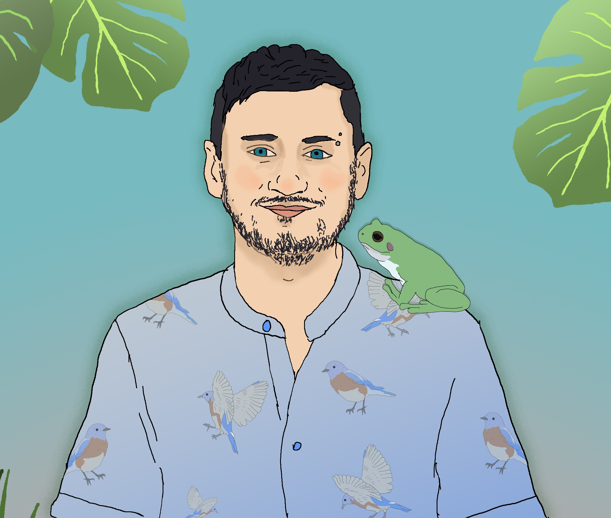
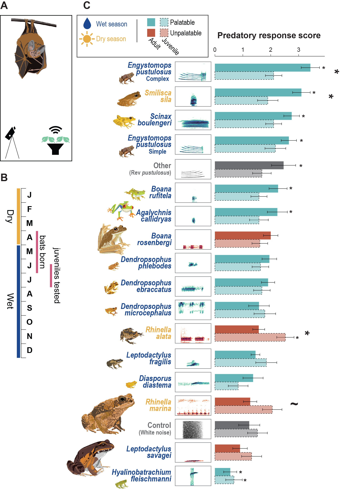

Postdoctoral Fellow
McGill University · Earth Species Project · Wavelength
Logan S. James
Diverse approaches to understand how acoustic communication systems function, evolve, and develop across species

Research

Birds Biases in Vocal Patterning
Songbirds and humans share striking similarities in how they organize vocal sequences. My work has found that learning biases, systematic tendencies in how vocal patterns are acquired, shape song structure in zebra finches in ways that parallel universal patterns in human speech and music. Through expansive comparative analyses across songbird species, I've discovered the prevalence of hierarchical patterning rules like Menzerath's law, and pervasive patterns in sequencing that are also found in human music. Surprisingly, I have found that vocal learning ability does not strongly predict sequence patterning.


Frogs Mechanisms of Communication
Túngara frogs produce multimodal courtship displays involving acoustic calls, vocal sac inflation, and surface water ripples. I study the production and perception of these displays, including how dopamine modulates call complexity and social decision-making. Using robotic frogs and laser vibrometry, I've mapped how different signal components covary and how receivers integrate multimodal information to make mate choice decisions.


Bats Auditory Decision-Making
Fringe-lipped bats are remarkable eavesdroppers: they locate prey by listening to the mating calls of frogs and insects. But how do young bats learn which calls mean a safe meal versus a toxic one? By testing wild-caught bats across development, I found that juvenile bats begin with broad, exploratory predatory responses that appear to be refined through experience, documenting a developmental trajectory for acoustic cognition in the wild.



Humans Shared Acoustic Preferences
Do humans and other animals find the same sounds appealing? Using a large-scale online experiment through The Music Lab, I presented thousands of human listeners with pairs of animal calls and asked which they preferred. Remarkably, human preferences aligned with those of the animals themselves across birds, frogs, insects, and mammals, suggesting that some aspects of acoustic aesthetics may be rooted in shared auditory biases in processing.

Zebra finches · AI Vocal Interactions
Vocal exchanges are common across species, yet the principles underlying the interaction dynamics are often poorly understood. In collaboration with Earth Species Project, I use comprehensive analysis pipelines to examine the interactions of female zebra finches and measure their response dynamics. Moreover, using AI-driven acoustic interaction models, I can simulate real-time interactions with live animals and identify the importance of key features to elicit naturalistic behavior from a bird.

Study Species
.JPG)
Zebra Finch
Taeniopygia castanotis
Photo: Raina Fan

Zebra Finch
Taeniopygia castanotis (females)

Bengalese Finch
Lonchura striata domestica
.jpg)
Túngara Frog
Engystomops pustulosus
Photo: Kim Hunter

Fringe-lipped Bat
Trachops cirrhosus
Photo: Grant Maslowski